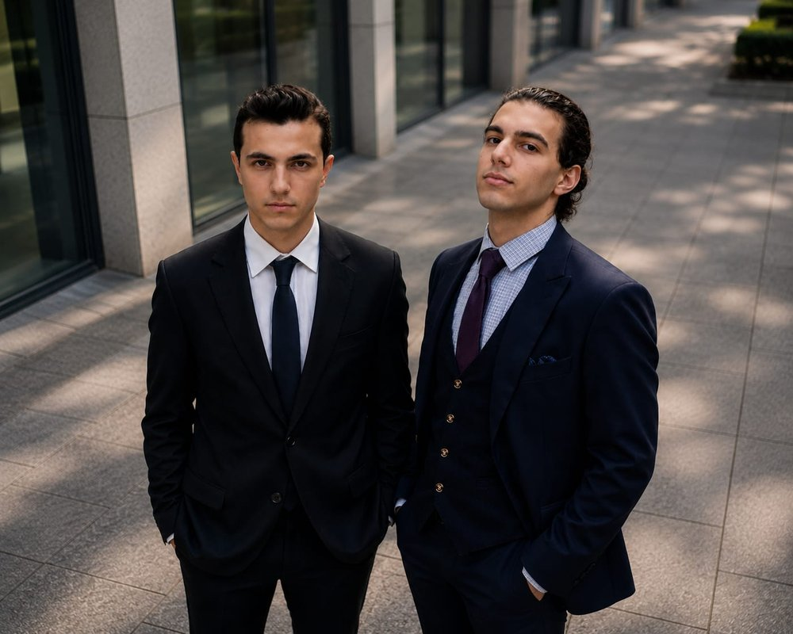
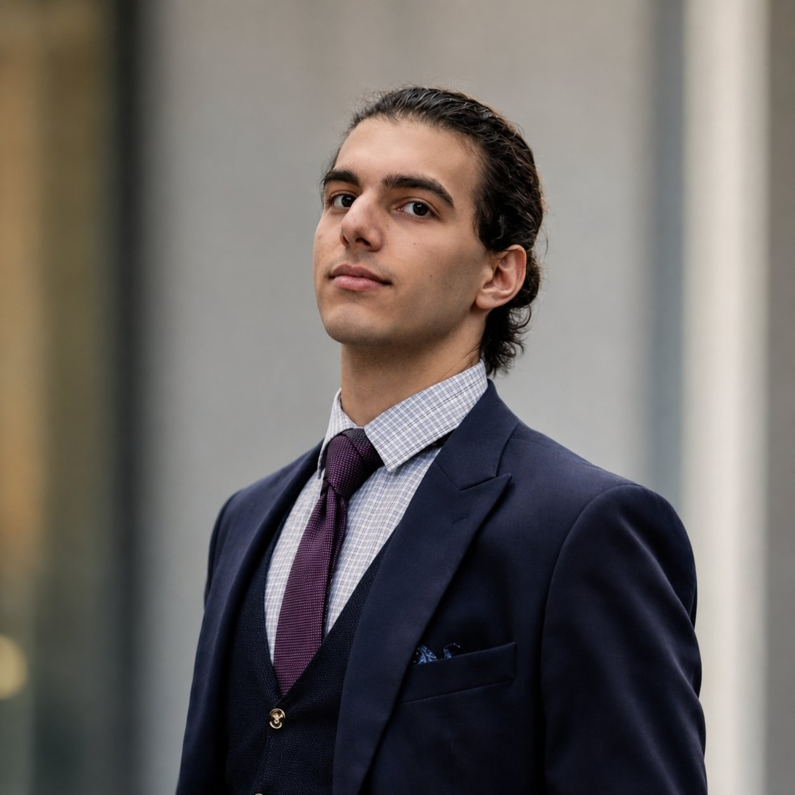
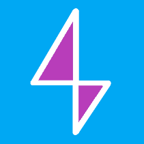
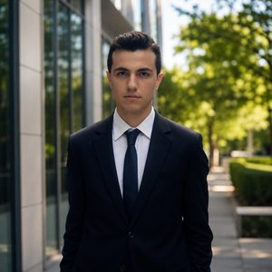

Who We Are
An Independent Student-Led Innovation Initiative
Terra Reform brings together ambitious students who want to move beyond discussing challenges and instead design, build, and test real solutions.
Our Story
Doing Serious Work, Together
Terra Reform is a student-led science and technology organization dedicated to advancing research, engineering, innovation, and problem-solving through interdisciplinary collaboration. Founded by students with a shared passion for science, technology, and societal impact, Terra Reform serves as a platform where young innovators can transform ideas into meaningful projects that address real-world challenges.
Our mission is to empower students to explore, design, and develop scientific, technological, and software-based solutions while fostering curiosity, creativity, leadership, and teamwork. By combining knowledge from diverse fields, we encourage members to approach complex problems with both analytical thinking and practical implementation.
Terra Reform has participated in a range of national and international programs and competitions, including TEKNOFEST, TÜBİTAK High School Research Project Competitions, CERN Beamline for Schools (BL4S), the New York Academy of Sciences (NYAS), and the Büyük Ankara AI and Climate Policy Workshop. Through these initiatives, our members have gained experience in research, engineering design, scientific communication, project management, and collaborative innovation.
Mission
To empower students to transform ideas into impactful projects that create positive change in society.
Vision
A globally connected student innovation network evolving into an innovation ecosystem and startup incubator for student-led solutions.
Approach
Members research, design, build, test, and present real projects — not just discuss problems. Interdisciplinary collaboration is central to everything we do.
What's Next
We are not limited to our current portfolio — Terra Reform is actively looking to join new programs, enter new competitions, and launch further projects.
What We Stand For
Core Values
The principles that shape how we work, build, and grow as an organization.
The People Behind Terra Reform
Founders
Terra Reform was founded and is led by students who combine academic achievement with hands-on research, engineering, and leadership experience.

Mahmut Kartal & Deniz Yılmaz

Incoming Computer Science student at TU Delft with a strong interest in technology, innovation, sustainability, leadership, and international collaboration. His work spans software development, scientific research, engineering, entrepreneurship, and youth-led innovation initiatives, with a particular focus on developing practical solutions to real-world challenges.
Throughout high school, Deniz combined academic achievement with hands-on experience in science, technology, and project development. He has contributed to research and engineering projects in areas including renewable energy, educational technology, accessibility, robotics, environmental sustainability, and software-based innovation. His projects have been presented in national and international programs and competitions, including TEKNOFEST, CERN Beamline for Schools (BL4S), the New York Academy of Sciences (NYAS), and the TÜBİTAK High School Research Project Competition.
Alongside his scientific interests, Deniz founded and manages 
Beyond technology, Deniz has actively participated in Model United Nations, policy workshops, public speaking, youth leadership programs, and community initiatives. His interests extend beyond computer science into European affairs, political science, history, philosophy, and languages, reflecting a broader interest in how institutions, technology, and innovation can work together to create positive societal impact.
As he begins his studies at TU Delft, Deniz is focused on expanding his technical expertise, contributing to ambitious interdisciplinary projects, building international networks, and developing innovative solutions that combine scientific progress with long-term social and environmental benefit.

Incoming Mechanical Engineering student at the Karlsruhe Institute of Technology (KIT) with a strong interest in robotics, autonomous systems, artificial intelligence, advanced materials, and the future of engineering innovation.
Throughout high school, Mahmut pursued opportunities that combined rigorous academics with research, leadership, and interdisciplinary problem-solving. His scientific interests led him to conduct independent research on the radiation tolerance of superconducting materials using SRIM and FLUKA simulations, and to contribute to a CERN Beamline for Schools (BL4S) proposal investigating the behavior of superconducting systems under proton irradiation.
Academically, he graduated as Valedictorian (1/40) with a GPA of 98.6/100, earned a SAT score of 1510, and received AP Scholar with Distinction recognition, with coursework including AP Calculus BC, AP Physics C: Mechanics, AP Chemistry, and AP English Language and Composition.
He was also selected for several highly competitive academic and leadership programs, including the New York Academy of Sciences Junior Academy, Ali Nesin Mathematics Camp, Young Guru Academy (YGA), and the METU Teknokent Genç Gölge Fellowship — collaborating with talented students, researchers, and professionals while strengthening his analytical and leadership skills.
Mahmut has led interdisciplinary and international teams in sustainability, engineering, and research-oriented initiatives, gaining experience in project management, scientific communication, and collaborative problem-solving. Alongside his technical pursuits, he is the Founder and Editor-in-Chief of a student literary magazine and the author of two philosophy-oriented books exploring art, meaning, and the ideas of Friedrich Nietzsche.
He is particularly interested in the intersection of engineering, artificial intelligence, and emerging technologies, and is currently focused on strengthening his skills in Python, C++, robotics systems, AI-assisted development, and German language proficiency as he prepares to begin his engineering studies in Germany.
Focus Areas
Where We Work
Six interconnected disciplines — pursuing practical solutions at their intersection.
Science
Research-driven experimentation, scientific inquiry, and evidence-based competition project development.
Engineering
Designing and building prototypes that bridge the gap between theory and practical implementation.
Sustainability
Developing solutions to environmental and societal challenges through applied research and innovation.
Software Development
Building digital tools, simulations, and applications that solve real-world problems at scale.
Education
Making science and technology education more accessible, engaging, and hands-on for students everywhere.
Accessibility
Designing inclusive solutions that expand access to education, technology, and information for all.